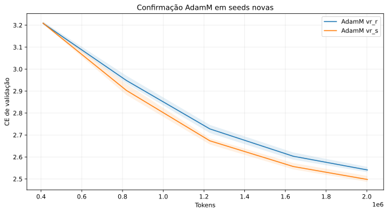
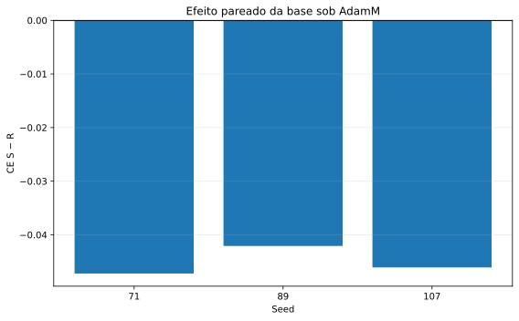
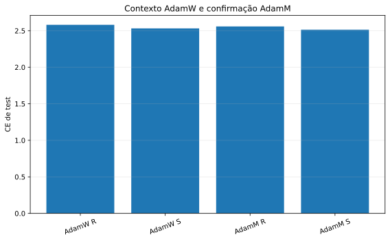
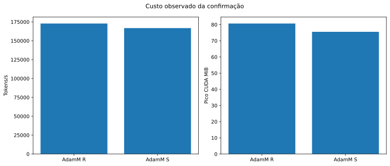

ASM-VR-S AdamM confirmation
complete
: PASS
finite
: PASS
streaming
: PASS
s_quality_superior
: PASS
validation ce adamm new seeds

paired s minus r adamm

quality optimizer context

adamm confirmation cost
